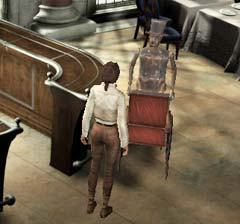
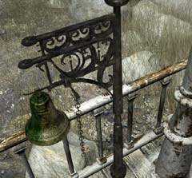

| 概要 | 地図 | |
| 淡いヒント集 | ヒント集 | 的確なヒント集 |
| 攻略最短ルート | Syberia 攻略へ |
| << 前の段階へ | 地域選択へ | 次の段階へ >> |
アラルバッド
|

ヘレナの居場所はジェイムスに聞こう。彼は、桟橋にいると答えてくれるはずだ。 ヘレナのいる桟橋への扉は閉まっている。そのロックを外すには、この装置に正しい番号を入力するしかない。では、その正しい番号とは何だろうか? 
カウンターにあったノートを見てみよう。ここに、利用コードという欄があるはずだ。そこには、装置に入力できそうな4桁の数字が入っている。それでは、このノートから何を調べればよいだろうか? 答えは簡単である。Access Cardではなく、利用コードを使っていてなおかつまだチェックアウトしていない人間を捜せばよいのだ。それは、1人しかいないのですぐ見つかるはずだ。 どうしても分からなければ、上の画像を見て欲しい。 カウンターのノートを調べて利用コードを入力しても扉が開かなかっただろう。しかし、失望しないで欲しい。上の画像の扉が開いているのだ。 これはどういう原理かは不明だが、とりあえず中に入ってみよう。中には一枚のカードが落ちていて、それには利用コードが印刷されている。 その数字を入力しさえすれば、桟橋へ続く扉は開くだろう。   桟橋でヘレナと会ったあなたに対し、彼女はジェイムスを呼ぶように言うだろう。ジェイムスを呼ぶにはベルを鳴らすのだが、あのカラクリ人形は耳が遠いのかベルを鳴らしてもこちらへ来ない。 そこで、ベルを取り外し桟橋に近いほうにベルを取り付けて鳴らしてみよう。ところが、それでもジェイムスは来ないのだ。いくらならしても来ないので、直接呼びにいってみよう。 |
| << 前の段階へ | 地域選択へ | 次の段階へ >> |
| 概要 | 地図 | |
| 淡いヒント集 | ヒント集 | 的確なヒント集 |
| 攻略最短ルート | Syberia 攻略へ |
Syberia
| 目次へ戻る | ページの上部へ |